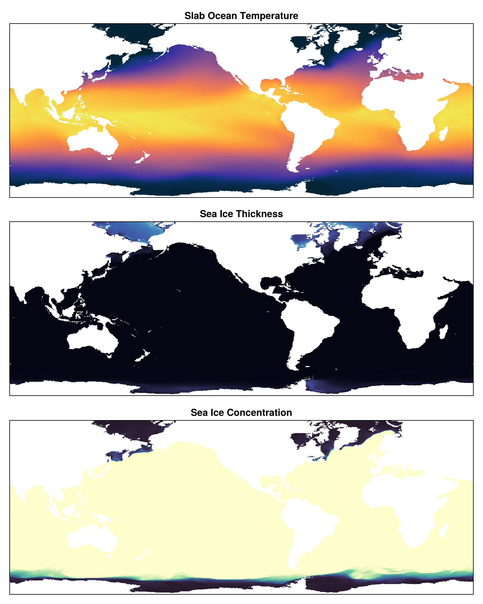

Implementing a Slab Ocean Component
This tutorial demonstrates how to implement a new ocean component for EarthSystemModel: a slab ocean model. A slab ocean represents the ocean as a single well-mixed layer with a fixed depth, making it computationally efficient while still capturing the essential thermodynamic coupling between the ocean, atmosphere, and sea ice. This approach is commonly used in climate sensitivity studies and is detailed by Garuba et al. (2024).
Overview
A slab ocean model simplifies the full 3D ocean by:
- Representing the ocean as a single temperature (and optionally salinity) per horizontal grid point
- Using a fixed "slab depth" that determines the heat capacity
- Evolving temperature based on net heat fluxes from the atmosphere and sea ice
- Having no ocean dynamics (no velocities)
To integrate a slab ocean into EarthSystemModel, we need to extend several methods from NumericalEarth's EarthSystemModels.jl and InterfaceComputations.jl modules as well as Oceananigans' TimeSteppers.jl module
ComponentExchanger: Defines how to extract state from the component for flux computationsinterpolate_state!: Interpolates component state onto the exchange gridupdate_net_fluxes!: Computes net fluxes and applies them to the componentreference_density: of the ocean componentheat_capacity: of the ocean componentocean_salinity: returns the entire salinity field of the ocean componentocean_temperature: returns the entire temperature field of the ocean componentocean_surface_salinity: returns the salinity at the surface of the ocean componentnet_fluxes: Returns the flux fields that will be updated by the coupling systemtime_step!: Advances the component forward in time
Define the Slab Ocean Type
First, we define a struct to hold the slab ocean state and its constructor. We also define a summary and show method for the slab ocean type.
using Oceananigans, Base
struct SlabOcean{G, C, T, F}
grid :: G
clock :: C
temperature :: T
temperature_flux :: F
end
function SlabOcean(grid; clock = Clock(time=0))
temperature = CenterField(grid)
temperature_flux = CenterField(grid)
return SlabOcean(grid, clock, temperature, temperature_flux)
end
Base.summary(slab_ocean::SlabOcean) = "SlabOcean with Depth=$(slab_ocean.grid.Lz)"
Base.show(io::IO, slab_ocean::SlabOcean) = print(io, Base.summary(slab_ocean))[ Info: Oceananigans will use 8 threads
Extend the InterfaceComputations.jl module
The ComponentExchanger type contains the state variables needed for flux computations. These are the ocean surface state on the exchange_grid and the "regridder" to interpolate data from the ocean onto the exchange_grid. Here, we assume that the ocean is on the same grid as the exchange grid, so that the regridder is "nothing" and the state variables are the same as the ocean surface state. The flux computation requires also ocean surface salinity and velocities to compute the turbulent fluxes.
using NumericalEarth.EarthSystemModels.InterfaceComputations
using NumericalEarth.EarthSystemModels: ocean_surface_salinity, ocean_surface_velocities
function InterfaceComputations.ComponentExchanger(slab_ocean::SlabOcean, exchange_grid)
T = slab_ocean.temperature
S = ocean_surface_salinity(slab_ocean)
u, v = ocean_surface_velocities(slab_ocean)
return InterfaceComputations.ComponentExchanger((; u, v, T, S), nothing)
endThe net_fluxes function returns the flux fields that will be updated by the coupling system. For a slab ocean, we need to return the container for the temperature flux stored in the slab_ocean as well as dummy salinity flux and dummy stress fields which will be unused since the slab ocean has no dynamics and a constant salinity.
function InterfaceComputations.net_fluxes(slab_ocean::SlabOcean)
grid = slab_ocean.grid
Jˢ = Field{Center, Center, Nothing}(grid)
τx = Field{Center, Center, Nothing}(grid)
τy = Field{Center, Center, Nothing}(grid)
return (T=slab_ocean.temperature_flux, S=Jˢ, u=τx, v=τy)
endExtend the EarthSystemModels.jl module
In the EarthSystemModels.jl module, we define the thermodynamic properties of the ocean component as well as all the helper functions needed to retrieve the ocean state and surface state.
using NumericalEarth.EarthSystemModels
EarthSystemModels.reference_density(::SlabOcean) = 1025.0
EarthSystemModels.heat_capacity(::SlabOcean) = 3990.0
EarthSystemModels.ocean_surface_salinity(slab_ocean::SlabOcean) = Oceananigans.Fields.ConstantField(35.0)
EarthSystemModels.ocean_salinity(slab_ocean::SlabOcean) = Oceananigans.Fields.ConstantField(35.0)
EarthSystemModels.ocean_temperature(slab_ocean::SlabOcean) = slab_ocean.temperatureThe update_net_fluxes! function computes net fluxes and applies them to previously defined net_fluxes containers. These will be used to update the ocean state in the time_step! method. In this case, we can use the update_net_ocean_fluxes! function from the Oceans.jl module.
using NumericalEarth.Oceans
EarthSystemModels.update_net_fluxes!(coupled_model, slab_ocean::SlabOcean) =
Oceans.update_net_ocean_fluxes!(coupled_model, slab_ocean, slab_ocean.grid)Extend the TimeSteppers.jl module
The time_step! method is called by the coupled model to advance the component forward in time. For a slab ocean, this method advances temperature through the computed flux. Note the convention that the fluxes are positive when they are leaving the ocean component (cooling the ocean).
using Oceananigans.TimeSteppers: tick!
function Oceananigans.TimeSteppers.time_step!(slab_ocean::SlabOcean, Δt)
tick!(slab_ocean.clock, Δt)
parent(slab_ocean.temperature) .-= parent(slab_ocean.temperature_flux) .* Δt ./ slab_ocean.grid.Lz
return nothing
endComplete Example: Coupling Slab Ocean with JRA55 and Sea Ice
Here's a complete example showing how to use the slab ocean in a coupled simulation. We use the JRA55 reanalysis for the atmosphere and the ECCO4Monthly dataset to initialize our slab ocean. We also initialize the sea ice with climatological data and see how the sea ice evolves.
using NumericalEarth
using Oceananigans
using Oceananigans.Units
using Dates
arch = GPU()
grid = TripolarGrid(arch, size=(720, 720, 1), z=(-50, 0))
bottom_height = regrid_bathymetry(grid; minimum_depth=15, major_basins=1, interpolation_passes=10)
grid = ImmersedBoundaryGrid(grid, GridFittedBottom(bottom_height); active_cells_map=true)
slab_ocean = SlabOcean(grid)
set!(slab_ocean.temperature, Metadatum(:temperature, dataset=ECCO4Monthly()))
atmosphere = NumericalEarth.JRA55PrescribedAtmosphere(arch)
sea_ice = NumericalEarth.sea_ice_simulation(grid, slab_ocean, advection=WENO(order=7))
set!(sea_ice.model, h=Metadatum(:sea_ice_thickness, dataset=ECCO4Monthly()),
ℵ=Metadatum(:sea_ice_concentration, dataset=ECCO4Monthly()))
interfaces = ComponentInterfaces(atmosphere, slab_ocean, sea_ice; exchange_grid=grid)
coupled_model = NumericalEarth.EarthSystemModel(atmosphere, slab_ocean, sea_ice; interfaces)
simulation = Simulation(coupled_model, Δt=60minutes, stop_time=120days)
run!(simulation)[ Info: Interpolation passes of bathymetry size (21600, 10800, 1) onto a Oceananigans.Grids.OrthogonalSphericalShellGrid target grid of size (720, 720, 1):
[ Info: pass 1 to size (19512, 9792, 1)
[ Info: pass 2 to size (17424, 8784, 1)
[ Info: pass 3 to size (15336, 7776, 1)
[ Info: pass 4 to size (13248, 6768, 1)
[ Info: pass 5 to size (11160, 5760, 1)
[ Info: pass 6 to size (9072, 4752, 1)
[ Info: pass 7 to size (6984, 3744, 1)
[ Info: pass 8 to size (4896, 2736, 1)
[ Info: pass 9 to size (2808, 1728, 1)
[ Info: pass 10 to size (720, 720, 1)
[ Info: Initializing simulation...
[ Info: ... simulation initialization complete (2.630 seconds)
[ Info: Executing initial time step...
[ Info: ... initial time step complete (2.082 minutes).
[ Info: Simulation is stopping after running for 16.140 minutes.
[ Info: Simulation time 120 days equals or exceeds stop time 120 days.
And now visualize.
using CairoMakie
Oceananigans.ImmersedBoundaries.mask_immersed_field!(slab_ocean.temperature, NaN)
Oceananigans.ImmersedBoundaries.mask_immersed_field!(sea_ice.model.ice_thickness, NaN)
Oceananigans.ImmersedBoundaries.mask_immersed_field!(sea_ice.model.ice_concentration, NaN)
fig = Figure(size = (800, 1000), fontsize = 16)
axT = Axis(fig[1, 1], title="Slab Ocean Temperature")
axh = Axis(fig[2, 1], title="Sea Ice Thickness")
axℵ = Axis(fig[3, 1], title="Sea Ice Concentration")
heatmap!(axT, Array(interior(slab_ocean.temperature, :, :, 1)), colormap=:thermal)
heatmap!(axh, Array(interior(sea_ice.model.ice_thickness, :, :, 1)), colormap=:ice)
heatmap!(axℵ, Array(interior(sea_ice.model.ice_concentration, :, :, 1)), colormap=:deep)
hidedecorations!(axT)
hidedecorations!(axh)
hidedecorations!(axℵ)
save("slab_ocean.png", fig)
Summary
The slab ocean example demonstrates how a simplified component can be integrated into the coupling framework while maintaining compatibility with the existing atmosphere and sea ice components. The key insight is that the coupling system handles flux computations generically; your component just needs to provide the right interface methods.
This page was generated using Literate.jl.